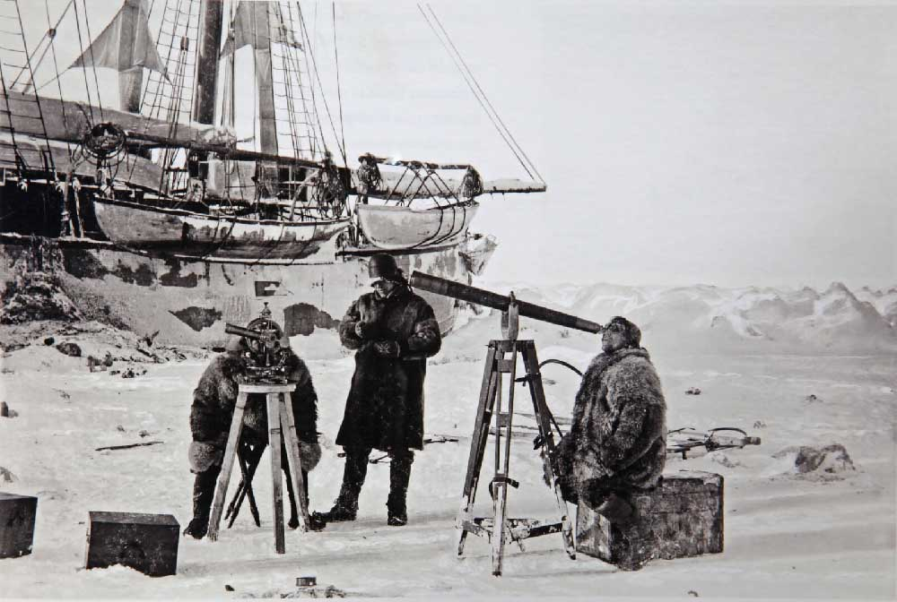

Atteindre les pôles a toujours été un défi pour les hommes. Scientifiques, navigateurs ou aventuriers, tous veulent conquérir ces territoires encore vierges. Ces terres gelées ne sont cependant pas les plus faciles à apprivoiser.
Pole Nord Geographique/Magnetique

Le pôle Nord se situe au milieu de l'océan Arctique, au-dessus de la plaine abyssale polaire qui À la verticale du pôle,
l'océan atteint une profondeur de 4 261 mètres et est couvert en permanence par la banquise arctique(couche permanente de gèle), contrairement au pôle Sud situé sur la masse continentale Antarctique
Le pôle Nord géographique ne doit pas être confondu avec le pôle Nord magnétique, le point central du champ magnétique terrestre vers lequel toutes les boussoles pointent.
Ce concept, appelé vrai Nord (nord géographique)», est apparu à cause de la difference de l'axe géographique et l'axe mathematique à cause de l'inclinaison de l'axe de rotation de la terre, notamment le pole utilisé comme base de repère pour les systèmes GPS est le vrai nord(nord geographique)
qui est fixe at inchangable par rapport au nord mathématique change constamment et dépend de la localisation du mesurant à cause des oscillations magnétique
Exploration du pole Nord
Dès le XVIème siècle, on estime que le Pôle Nord est situé dans une mer, qui serait une mer polaire ouverte et plusieurs expéditions sont menées entre 1853 et 1876. Les explorateurs, qui décident de s’aventurer dans ces contrées lointaines, espèrent trouver une voie accessible dans la glace à un moment favorable dans l’année.
Le premier record homologué d’une présence humaine aussi septentrionale date du 16 juin 1596 : Willem Barentsz et son expédition néerlandaise atteignent la latitude 79°49’ Nord. Il mourra l’année suivante. Des années plus tard, en 1895, Nansen, explorateur norvégien approche le Pôle Nord à bord d’un nouveau genre de bateau, le Fram. La coque arrondie de ce navire d’un nouveau genre, lui permet de se faire soulever par la glace et non pas écraser. Ce sont les premiers à s’approcher aussi près du Pôle Nord.
